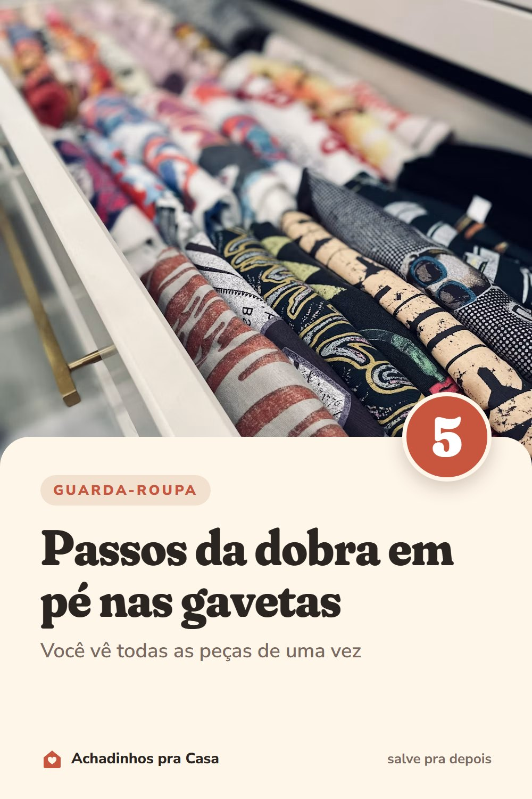

Guarda-roupa
Dobra em pé: organize as gavetas em 5 passos
Você vê todas as peças de uma vez, sem desmontar a pilha.
- Dobre em retânguloCom a camiseta aberta, as mangas vão para dentro e ela vira um retângulo liso.
- Dobre de novo até ficar firmeEm duas ou três partes, até a peça parar em pé sozinha.
- Guarde como num fichárioAs peças ficam em pé, uma atrás da outra, e não empilhadas.
- Separe por tipoCamisetas, bermudas e pijamas, cada um na sua fileira.
- Use caixas nas gavetas fundasUma caixa sem tampa segura as peças em pé.